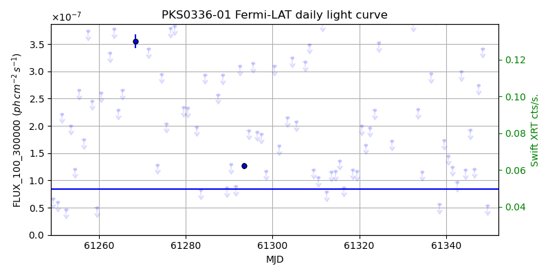
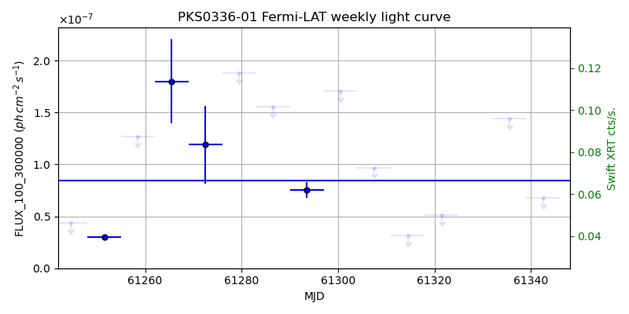
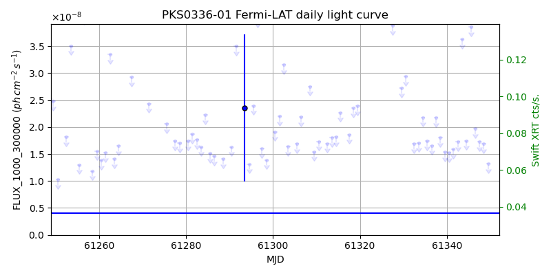
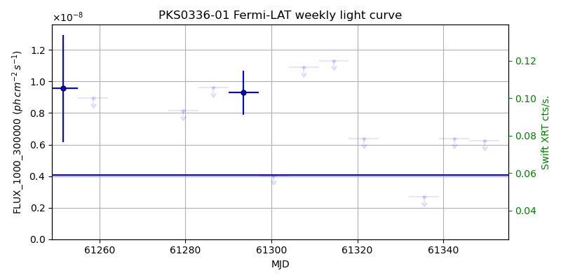

LAT Lightcurve site: https://fermi.gsfc.nasa.gov/ssc/data/access/lat/msl_lc/source/PKS_0336-01
Swift site: https://www.swift.psu.edu/monitoring/source.php?source=0336-019
NED: Query
Time of last update of this page: UT: 2026-11-13 16:14 (MJD: 61357.677)
| Property | Value |
|---|---|
| R.A. | 3:39:30.96 |
| Dec. | -1:46:37.2 |
| z | 0.852 |
| 3FGL SpectrumType | LogParabola |
| 3FGL PL Index | |
| 3FGL Flux_100_300000 | 8.42e-08 1 / (s cm2) |
| 3FGL Flux_1000_300000 | 4.08e-09 1 / (s cm2) |
| 3FGL Flux >200 GeV | 6.19e-13 1 / (s cm2) |
| 3FGL Extrap. Crab >200 GeV | 0.00 |
| 3FGL Flux After EBL Absorption >200GeV | 2.37e-14 1 / (s cm2) |
| 3FGL EBL Crab Fraction >200GeV | 0.00 |

| MJD | dMJD | Flux | dFlux | Frac3FGL | FracCrab>200GeV | EBLFracCrab>200GeV |
|---|---|---|---|---|---|---|
| 61348.50 | 0.50 | 3.42e-07 | 0.00e+00 | 0.00 | 0.00 | 0.00 |
| 61349.50 | 0.50 | 5.35e-08 | 0.00e+00 | 0.00 | 0.00 | 0.00 |
| 61350.50 | 0.50 | 9.95e-08 | 0.00e+00 | 0.00 | 0.00 | 0.00 |
| 61351.50 | 0.50 | 4.17e-07 | 0.00e+00 | 0.00 | 0.00 | 0.00 |
| 61352.50 | 0.50 | 3.76e-07 | 0.00e+00 | 0.00 | 0.00 | 0.00 |

| MJD | dMJD | Flux | dFlux | Frac3FGL | FracCrab>200GeV | EBLFracCrab>200GeV |
|---|---|---|---|---|---|---|
| 61321.50 | 3.50 | 5.11e-08 | 0.00e+00 | 0.00 | 0.00 | 0.00 |
| 61328.50 | 3.50 | 3.75e-07 | 0.00e+00 | 0.00 | 0.00 | 0.00 |
| 61335.50 | 3.50 | 1.44e-07 | 0.00e+00 | 0.00 | 0.00 | 0.00 |
| 61342.50 | 3.50 | 6.79e-08 | 0.00e+00 | 0.00 | 0.00 | 0.00 |
| 61349.50 | 3.50 | 8.46e-08 | 0.00e+00 | 0.00 | 0.00 | 0.00 |

| MJD | dMJD | Flux | dFlux | Frac3FGL | FracCrab>200GeV | EBLFracCrab>200GeV |
|---|---|---|---|---|---|---|
| 61348.50 | 0.50 | 1.69e-08 | 0.00e+00 | 0.00 | 0.00 | 0.00 |
| 61349.50 | 0.50 | 1.32e-08 | 0.00e+00 | 0.00 | 0.00 | 0.00 |
| 61350.50 | 0.50 | -1.00e+00 | 0.00e+00 | 0.00 | 0.00 | 0.00 |
| 61351.50 | 0.50 | 1.40e-08 | 0.00e+00 | 0.00 | 0.00 | 0.00 |
| 61352.50 | 0.50 | 2.59e-08 | 0.00e+00 | 0.00 | 0.00 | 0.00 |

| MJD | dMJD | Flux | dFlux | Frac3FGL | FracCrab>200GeV | EBLFracCrab>200GeV |
|---|---|---|---|---|---|---|
| 61321.50 | 3.50 | 6.38e-09 | 0.00e+00 | 0.00 | 0.00 | 0.00 |
| 61328.50 | 3.50 | 1.48e-08 | 0.00e+00 | 0.00 | 0.00 | 0.00 |
| 61335.50 | 3.50 | 2.69e-09 | 0.00e+00 | 0.00 | 0.00 | 0.00 |
| 61342.50 | 3.50 | 6.38e-09 | 0.00e+00 | 0.00 | 0.00 | 0.00 |
| 61349.50 | 3.50 | 6.24e-09 | 0.00e+00 | 0.00 | 0.00 | 0.00 |
--------------------------------------------------------- Using user-supplied coords: 3:39:30.96 -1:46:37.2 2000 --------------------------------------------------------- FLWO UT night of: 2026-11-14 Local Sid. @ Midnight: 03:09 Sunset (-15.0) (local, UT): 18:35 01:35 Sunrise (-15.0) (local, UT): 05:42 12:42 Moonrise (local, UT): Moonset (local, UT): 20:50 03:50 Moon phase: 0.22 --------------------------------------------------------- AzTime LSID UT Obj_el Obj_az Mn_el Mn_az Sep. --------------------------------------------------------- 18:35 21:44 01:35 0.3 91.8 20.1 218.2 124.0 19:05 22:14 02:05 6.3 95.8 16.0 223.7 123.8 19:35 22:44 02:35 12.6 99.9 11.6 228.6 123.7 20:05 23:14 03:05 18.8 104.2 6.9 233.2 123.6 20:35 23:44 03:35 24.9 108.9 2.0 237.3 123.4 21:05 00:14 04:05 30.9 114.1 -2.2 241.2 123.2 21:35 00:44 04:35 36.6 120.0 -9.0 244.8 123.1 22:05 01:14 05:05 41.9 126.9 -14.6 248.2 122.9 22:35 01:44 05:35 46.7 134.9 -20.4 251.4 122.7 23:05 02:14 06:05 50.9 144.4 -26.2 254.5 122.5 23:35 02:44 06:35 54.1 155.6 -32.1 257.5 122.2 00:05 03:14 07:05 56.1 168.3 -38.1 260.6 122.0 00:35 03:45 07:35 56.6 181.9 -44.2 263.8 121.7 01:05 04:15 08:05 55.7 195.3 -50.2 267.1 121.5 01:35 04:45 08:35 53.3 207.6 -56.3 270.9 121.2 02:05 05:15 09:05 49.8 218.3 -62.4 275.3 120.9 02:35 05:45 09:35 45.5 227.4 -68.4 281.1 120.6 03:05 06:15 10:05 40.5 235.1 -74.2 289.9 120.3 03:35 06:45 10:35 35.0 241.7 -79.6 306.2 120.1 04:05 07:15 11:05 29.3 247.4 -83.2 343.5 119.7 04:35 07:45 11:35 23.3 252.4 -82.1 35.1 119.4 05:05 08:15 12:05 17.1 257.0 -77.4 61.2 119.1 05:35 08:45 12:35 10.9 261.2 -71.8 73.4 118.8 05:42 08:52 12:42 9.5 262.1 -70.5 75.2 118.8 --------------------------------------------------------- Dark hours >55 deg.: 1.49 srcstart (UT): 2026-11-14 06:46 srcend (UT): 2026-11-14 08:15